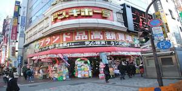

Don Quixote
Shinjuku east exit head office
If Grocery
[Address]
〒160-0021
Kabukicho, Shinjuku-ku, Tokyo 1-16-5
【TEL/FAX】
03-5291-9211/
03-5391-9222
[Business hours] 24 hours a day
None [regular holiday]
